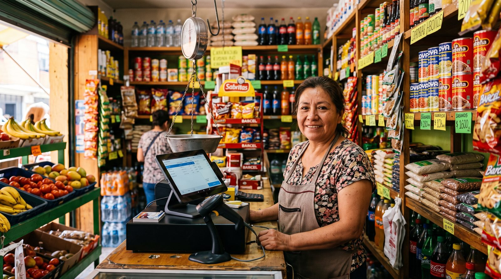

Sistema de punto de venta con CFDI: cómo elegir un POS compatible con el SAT
¿Buscas un sistema de punto de venta que te ayude a cumplir con la facturación electrónica del SAT sin volverte loco? En México, vender ya no es solo cobrar: es emitir tickets, generar CFDI 4.0 cuando el cliente lo pide y tener todo en orden para tu contador. En esta guía te explicamos, en lenguaje claro, qué exige realmente el SAT, qué funciones no pueden faltar y cómo elegir un POS que no te cobre de más.

Qué exige el SAT a tu punto de venta
Desde 2023, el CFDI 4.0 es el único formato válido de factura electrónica en México. No es opcional: cualquier comprobante que emitas hoy debe cumplir con esa versión. La buena noticia es que tu sistema de punto de venta puede encargarse de casi todo el trabajo pesado… si está bien hecho.
Lo primero que conviene entender es que el punto de venta no "timbra" por sí solo. El timbrado, el sello digital que vuelve válida una factura ante el SAT, solo lo pueden hacer los Proveedores Autorizados de Certificación (PAC). Por eso un buen POS o bien integra la facturación, o bien se conecta con un PAC para hacerlo. Como emisor, tú necesitas tres cosas vigentes: tu RFC, tu e.firma y un Certificado de Sello Digital (CSD).
Los datos que tu POS debe capturar
El cambio más sonado del CFDI 4.0 es que los datos del receptor deben coincidir exactamente con los registros del SAT. Un sistema bien diseñado te ayuda a capturar y validar:
- RFC y nombre o razón social del cliente, tal cual aparecen en su Constancia de Situación Fiscal.
- Código postal del domicilio fiscal: es el dato que más rechazos provoca, según varias guías especializadas.
- Régimen fiscal del receptor y uso del CFDI, que ahora se validan de forma más estricta (no todas las combinaciones son compatibles).
- Objeto de impuesto por cada concepto, con el desglose correspondiente de IVA o IEPS cuando aplique.
Ticket no es factura: la factura global
Aquí está la confusión más común. El ticket que entregas en caja no es un CFDI. Si el cliente no te pide factura, registras la venta como público en general y después puedes agrupar todas esas operaciones en una factura global, usando el RFC genérico XAXX010101000, el nombre "PUBLICO EN GENERAL" y el régimen 616 (sin obligaciones fiscales). Esa factura global se emite por periodos (por ejemplo diario, semanal o mensual). Un POS pensado para México debería facilitarte ambas vías: la factura individual cuando te la piden y la global para lo demás.
¿A quién aplica?
En la práctica, a casi cualquier negocio formal con ventas al público: tiendas de abarrotes y misceláneas, boutiques, ferreterías, cafeterías, restaurantes, bares y food trucks. Si emites comprobantes o tus clientes te piden factura, necesitas un esquema de CFDI 4.0 funcionando. Incluso si tributas en el Régimen Simplificado de Confianza (RESICO), sigues teniendo obligaciones de facturación; lo que cambia es el detalle de cómo y cuánto declaras, algo que conviene revisar con tu contador.
La herramienta gratuita del SAT existe, pero suele quedarse corta cuando el negocio crece: cuando manejas muchos productos, necesitas rapidez en caja, cancelaciones, descarga ordenada de XML o quieres que la venta y la factura vivan en el mismo sistema. Ahí es donde un punto de venta dedicado marca la diferencia.
Funciones imprescindibles de un POS moderno
Más allá del cumplimiento fiscal, un buen sistema de punto de venta en 2026 debería ofrecerte:
- Ventas y tickets rápidos con búsqueda de productos y cobro en pocos toques.
- Facturación CFDI 4.0, integrada o vía PAC, con factura individual y global.
- Modo sin conexión: que siga cobrando aunque se caiga el internet y sincronice solo al volver.
- Inventario y reportes para saber qué se vende y cuánto te queda.
- Funciones de restaurante: plano de mesas, comandas a cocina y división de cuenta.
- Multiusuario y permisos para controlar a tu equipo.
- Costo transparente, sin comisiones obligatorias sobre cada cobro.
Nuestra recomendación
Comparamos las opciones por su relación costo-beneficio real: lo que de verdad pagas al año, qué incluye el plan base, si funciona sin internet y qué tan bien se adapta a un restaurante. Esta es nuestra selección.
digabloPos
digabloPos es un punto de venta en la nube moderno que cubre lo que otros cobran aparte. Su plan base es gratis para siempre (sin límite de tiempo y sin tarjeta de crédito), está listo en unos 5 minutos y no te obliga a pagar comisión sobre tus cobros. Incluye modo sin conexión con sincronización automática, plano de mesas para restaurantes y soporte multimoneda, con módulos opcionales que activas solo cuando los necesitas.
Sobre la facturación: preséntalo como un POS listo para cumplir y moderno. Antes de contratar, te recomendamos confirmar directamente con el proveedor cómo se emite el CFDI 4.0 (integrado o vía un PAC) para asegurarte de que encaja con tu operación y tu contador.
👍 Fortalezas
- Plan base gratis, sin compromiso
- Funciona sin internet, con sincronización
- Pensado para restaurantes (mesas, cocina)
- Multimoneda nativo
- Sin comisión obligatoria sobre pagos
- Módulos que crecen contigo
- Manejo de fiado (crédito a clientes)
- Preparado para la facturación electrónica
👎 A tener en cuenta
- Marca más nueva que los gigantes
- Conviene confirmar el detalle de timbrado CFDI con el proveedor
- Algunos módulos avanzados son de pago
Alegra POS
Muy enfocado en el cumplimiento fiscal y la conexión con la contabilidad. Genera CFDI 4.0 y se integra con el ecosistema contable de Alegra. Sus planes de punto de venta arrancan alrededor de $215 MXN al mes (verifica el precio vigente), así que es una opción sólida si quieres todo bajo el mismo techo, aunque no tiene un plan base gratuito permanente tan amplio.
Bind ERP
Más que un POS, es un ERP completo: ventas, compras, inventario, finanzas y facturación 4.0 en un solo lugar. Potente para empresas que ya necesitan ese nivel de control, pero requiere contratar planes completos y tiene una curva de aprendizaje mayor que un punto de venta sencillo.
Clip / Mercado Pago Point
Excelentes para cobrar con tarjeta de forma móvil y sin renta mensual, pero su modelo gira en torno a la comisión por transacción (ver más abajo) y su app es más una terminal de cobro que un punto de venta completo. La facturación CFDI suele resolverse por separado. Buenos como complemento de cobro, justos como sistema central.
¿Quieres probar sin gastar un peso?
El plan base de nuestra opción #1 es gratis para siempre, listo en 5 minutos y sin tarjeta de crédito.
Crear mi caja gratis, 5 minTabla comparativa
| Criterio | digabloPos | Alegra POS | Bind ERP | Clip / Mercado Pago |
|---|---|---|---|---|
| Plan base gratis | Sí | No (de pago) | No (de pago) | App sí |
| Modo sin conexión | Sí | Parcial | Parcial | Limitado |
| Plano de mesas / restaurante | Sí | Limitado | Limitado | No |
| Facturación CFDI 4.0 | Confirmar con proveedor | Sí | Sí | Por separado |
| Comisión obligatoria por cobro | Ninguna | Ninguna | Ninguna | Sí (~3.5-3.6% + IVA) |
| Tiempo de configuración | ~5 min | Rápido | Medio | Muy rápido |
Datos verificados en junio de 2026 a partir de páginas oficiales y sitios comparativos especializados. Los precios, comisiones y funciones cambian con frecuencia: confirma siempre en los sitios oficiales antes de decidir. La emisión de CFDI de cada solución debe validarse directamente con el proveedor.
Costos reales: no olvides las comisiones de pago
El error más caro al elegir un punto de venta es mirar solo la mensualidad. El costo que muchos pasan por alto es la comisión por cobrar con tarjeta. A modo de referencia (junio 2026):
- Clip: comisión base de 3.6% + IVA por transacción aprobada, lo que en la práctica se acerca al 4.18% efectivo porque el IVA se aplica sobre la comisión.
- Mercado Pago Point: alrededor de 3.5% + IVA en pagos de contado con tarjeta.
Ninguno cobra renta mensual, pero esas comisiones se acumulan. Si vendes $1,000 con tarjeta, pagas cerca de $41 pesos de comisión; multiplica eso por cientos de ventas al mes y verás por qué conviene un POS que no te obligue a una comisión y te deje elegir libremente tu terminal de cobro.
El consejo práctico: calcula el costo a 12 meses incluyendo comisiones, no solo el precio "$0" o la mensualidad de la etiqueta.
Cómo elegir, paso a paso
- Confirma la facturación. Pregunta cómo emite CFDI 4.0 (integrado o vía PAC) y si soporta factura individual y global.
- Suma el costo real a 12 meses. Mensualidad + módulos necesarios + comisiones de cobro.
- Verifica el modo sin conexión. Que siga vendiendo si se cae el internet y sincronice solo.
- Piensa en tu giro. Restaurante necesita mesas y comandas; una tienda, inventario ágil.
- Prueba antes de pagar. Un plan gratuito o demo te dice más que cualquier folleto.
- Valídalo con tu contador. Es quien confirmará que todo cuadra con el SAT.
¿Listo para tu primera venta?
Configura tu caja gratis en 5 minutos, sin compromiso y sin tarjeta de crédito. Después confirma con el proveedor el detalle de tu facturación CFDI.
Empezar gratis, 5 minPreguntas frecuentes
¿Mi punto de venta tiene que emitir CFDI por cada venta?
No siempre al instante. Si el cliente pide factura, emites un CFDI 4.0 con sus datos fiscales. Si no la pide, registras la venta como público en general y agrupas esas operaciones en una factura global con el RFC genérico XAXX010101000, según la periodicidad que permita el SAT. Confirma el detalle con tu contador.
¿Qué necesito para poder facturar con CFDI 4.0?
Como emisor: RFC, e.firma vigente y un Certificado de Sello Digital (CSD). El timbrado solo lo hace un PAC, así que tu sistema debe estar conectado a uno o integrarlo.
¿Un punto de venta gratuito puede cumplir con el SAT?
Sí, siempre que la emisión de CFDI esté resuelta, ya sea integrada o vía PAC. Un POS gratuito puede llevar bien ventas, tickets, inventario y reportes; lo clave es verificar con el proveedor cómo se hace el timbrado antes de decidir.
¿Y si trabajo en el Régimen Simplificado de Confianza (RESICO)?
También facturas con CFDI 4.0. Lo que cambia es el detalle de cómo declaras y tus tasas; conviene revisarlo con tu contador para configurar bien tu punto de venta.